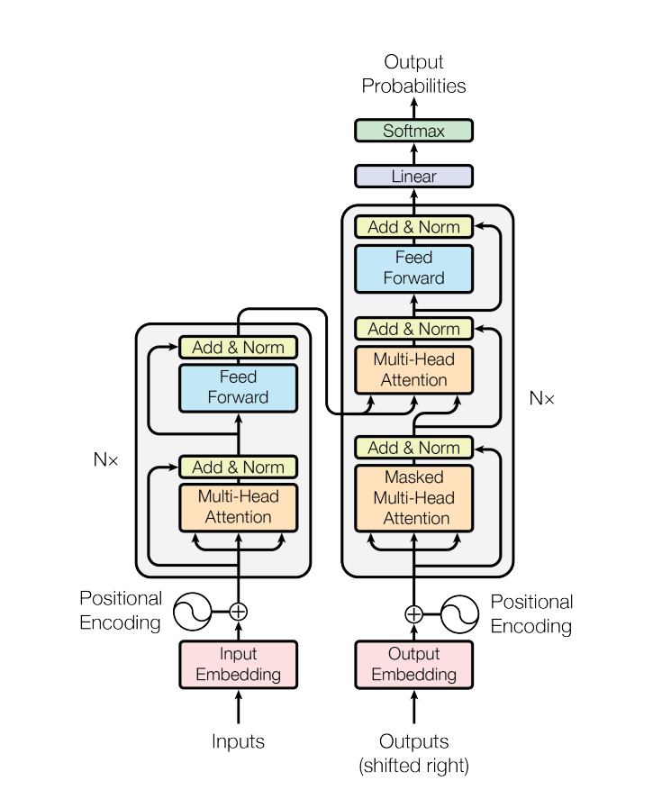
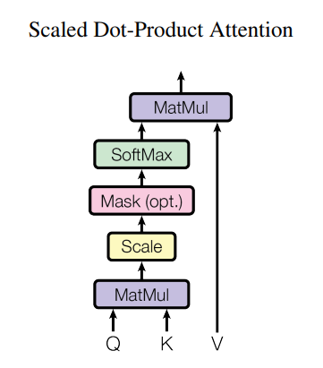
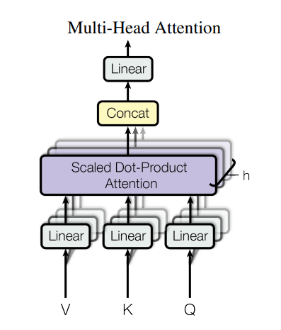

Transformers

1. Understanding the Transformer Model
1.1 Encoder: Self-Attention
- Step1: With embeddings stacked in X, calculate queries, keys and values. $$ Q=XW^Q, K=XW^K, V=XW^V $$
- Step2: Calculate attention scores between query and keys $$ E=QK^T $$
- Step3: Take the softmax to normalize attention scores
$$ A = softmax(E) $$ - Step4: Thake a weighted sum of values $$ Output = AV $$
Apply a feddforward layer to the output of attention, providing non-linear activatetion
\[
m_i = MLP(output_i) = W_2 *ReLU(W_1 \times output_i+b_1)+b_2
\]
To make this work for deep networks:
Training Trick #1: Resifual Connections
Training Trick #2: LayerNorm
Training Trick #3: Scaled Dot Product Attention

Fixing the first self-attention problem: sequence order
Solution: Inject Order Information through Positional Encodings
1.2 Multi-Headed Self-Attention

1.3 Decoder: Masked Multi-Head Self-Attention
- To use self-attention in decoders, we need to ensure we can't peek at the future. To enable parallelization, we mask out attention to future words by setting attention to \(-\infty\)
\[
e_{i j}=\left\{\begin{array}{l}
q_{i}^{\top} k_{j}, j<i \\
-\infty, j \geq i
\end{array}\right.
\]
- Add a feed forward layer (with residual connections and layer norm)
- Add a final linear layer to project the embeddings into a much longer vector of length vocab size (logits)
- Add a final softmax to generate a probability distribution of possible next words.
References
[1]. Attention Is All You Need
[2]. The Illustrated Transformer
[3]. Dive into Deep Learning: Transformer
[4]. CS224N: transformers
[5]. Transformer模型详解